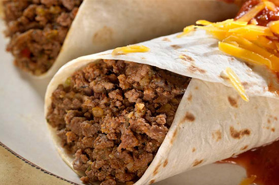

Burrito Recipe

Description
Full, almost exotic taste, from Mexico, with a twist. With few ingredients you can cover a quick meal.
Everyone loves them and the end product is ready in a flash
Ingredients
- 500gr ground beef
- 1 chopped onion
- 1/2 cup water
- 1 tablespoon chili powder (optional)
- 1 teaspoon salt
- 1 teaspoon red pepper flakes (optional)
- 1/2
teaspoon ground cumin (optional)
- 1/2 teaspoon garlic powder
- 4 large flour tortillas (or more as needed)
- cheese (prefferably something that melts easily, like mozzarella
Steps
- Preheat the oven to 175℃. Grease a pan with olive oil.
- Heat a large skillet over medium-high heat. Cook and stir beef & onion in the hot skillet until beef is browned and crumbly, 5 to 7 minutes; drain and discard grease.
- Add water, chili powder, salt, red pepper flakes, cumin, and garlic powder to beef mixture; bring to a boil. Reduce heat to medium-low and simmer. Add cheese after your turned off the stove.
- Fill each tortilla with beef mixture and roll the tortilla around filling. Arrange the burritos in the prepared baking pan.
- Bake in the preheated oven for 20 minutes. Cover burritos with cheese. Bake until cheese is melted, about 10 minutes more.